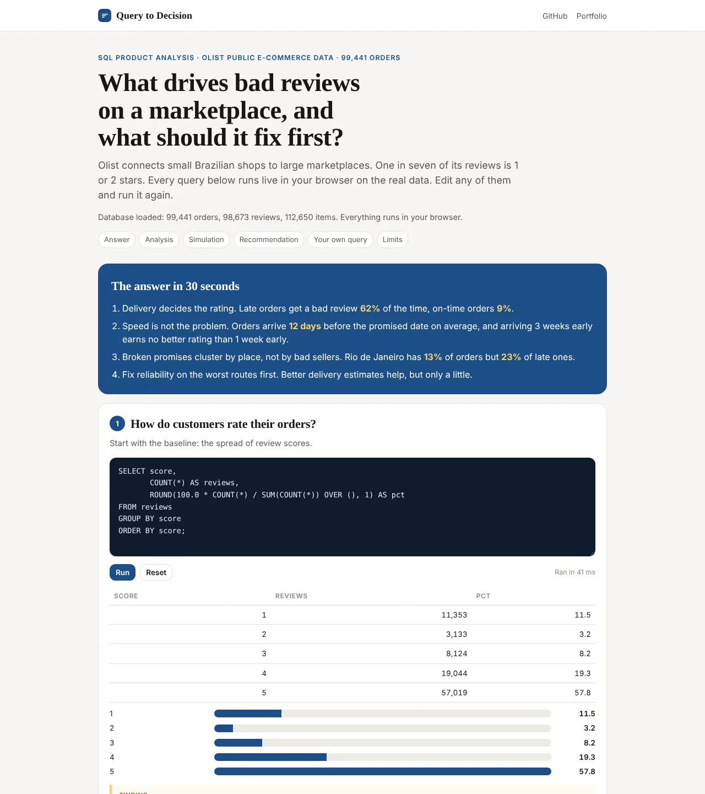

The problem
Olist's reviews are mostly good, but a large share of bad reviews cluster somewhere. I wanted to find where with SQL, size the problem, and turn it into one decision a product team could take.

What it does
- Ten queries from the question to the decision, each editable and runnable in the browser.
- Results with charts and the reading of each result.
- A delivery promise simulation on 2018 orders.
- Scripts that build the database and check every number.
Findings and decisions
Confirmed in the data
Late orders drive bad reviews
Late orders get a bad review 62.4% of the time, against 9.3% for on-time orders. Late and undelivered orders are 9.4% of orders but 42.8% of bad reviews.
Confirmed in the data
Promises are far longer than deliveries
The average promise is 24.4 days against 12.5 days actual. Cutting promises by two days would push late orders from 7.7% to 11.3% in the simulation.
Hypothesis
Fix routes and sellers, not the promise
Rio de Janeiro has 12.8% of orders but 22.9% of late ones, and the worst 5% of sellers handle 49.9% of orders but 58.7% of late ones. Targeting routes should cut bad reviews more than a blanket change.
What I would do next
- Add payment data back in and test whether late orders also lose repeat buyers.
- Route-level promises tested as an experiment.
- A seller scorecard on delivery reliability.